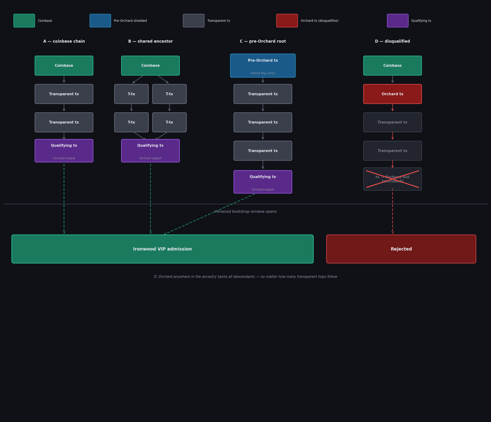

Orchard-free bootstrap window for Ironwood
There is probably some ZEC in the Orchard pool that we can prove was never from double-spent origin, but should we?
When Ironwood opens, any ZEC currently in Orchard can enter the new pool via the turnstile.
This solves the supply uncertainty problem created by the existence of a double-spend bug that is now patched. But there is a remaining problem. Orchard notes are indistinguishable from each other in terms of provenance — a note with a hidden double spend somewhere in its ancestry looks identical to one with a completely clean history. If this bug has been exploited (which I highly doubt), the current situation is simply going to be a race: whoever moves first gets in.
As far as I can tell, though, some ZEC in Orchard has a provably sound history: any note whose creating transaction has no shielded ancestry since Orchard activation in May 2022. These cannot have come via a double-spend transaction because double spends must originate in Orchard. Because only shielded pools hide their spend graphs, a note with no post-May-2022 shielded ancestry has a fully auditable value history. No hidden double spend can exist in its past. While other notes may exist in Orchard with no double-spend provenance, it would not be verifiable, so notes of this type are only a subset, but they may be a significant one.
I think it is too late to submit ideas for the new consensus rules for Ironwood, and this idea has at least one flaw, but I'm going to write it down anyway in case it's of interest or spurs other ideas later.
The idea is to open Ironwood with a short VIP admission window during which only these Orchard-free notes may enter. This gives demonstrably sound ZEC first priority, rather than leaving admission to a race with no quality distinction.
The feasibility of this depends directly on how feasible it would be to create a zk proof to verify that a nullifier comes from a note created with a txid from a particular known set. I don't have the background to analyze that right now, but it does seem to me that it's possible to do.
The flaw I'm sure about is that because only some genuine transactions can be verified in this way, we would have to enforce biased admission, putting provably good-provenance ZEC ahead of unprovably good-provenance ZEC.
Mechanism
Here's how it would work. Before Ironwood activates, the full transaction graph is traced to identify every transaction that has an Orchard output but whose inputs trace back to coinbase or pre-Orchard history without crossing any post-May-2022 shielded pool. The set of qualifying txids is committed as a protocol consensus parameter before activation.
During the VIP window, admission to Ironwood requires a zero-knowledge proof that the entering note was created by one of these qualifying transactions, and that its nullifier is unspent, without revealing which transaction created it. When this initial window closes, Ironwood opens to all.
Provenance Chain Examples
The diagram below illustrates valid and invalid provenance chains. Chains A, B, and C qualify for VIP admission. Chain D is disqualified because an Orchard transaction appears in its ancestry — regardless of how many transparent hops follow it.

Real-World Example
The following is a real, recent transaction on the Zcash mainnet that qualifies as Orchard-free (iff it has not since moved). Its ancestry traces back exclusively to coinbase outputs: 15 separate coinbase transactions feed into it with no shielded intermediaries. And it represents significant value. I don't yet know how many such potentially qualifying notes exist, because I don't yet have a full node running for quick analysis and I've had to search on explorer APIs.
Transaction: 5b2843fa...09da303
{ "5b2843fa67f46fb00b54a2bb7f43603df8ea1e8a43f209f3323f6ef5009da303": { "61b8863a4309f0a797c0f7f268e9d6ef4ee7bb27954b71b8fd76476ca057a967": "coinbase", "9adb7b460d3078a58cbdf1d9758edf31a444e9d90adb78aaff264252ea623c6b": "coinbase", "08de598f8f05d04a7fbc4440146ed5938ac0359ea99a5efabd876b118fd9136d": "coinbase", "daebd531bc8e9db495969a8aec3889a99182f7a220aa087e1895e69fc593336f": "coinbase", "2392412651e328b114ed688388a8291cf9bc6b13e3a62304321257afd4721e71": "coinbase", "4196d87bf14217a064e529cef3c98e7be24d575b8551ae5326bc852d3460cf72": "coinbase", "e2704ad5f38d4a423108b2665b22622e05fb6f71ed585b62ac2f127f20e3867b": "coinbase", "ab31922bed40edc5e7bd3e1c040c1b641939c6fbbc9fbfd696e1c8128e75327f": "coinbase", "1956a1ee11175bd5f1538094c60eaa0665531bf76c3fc23b13615f1089c95d81": "coinbase", "b6c07b84b1b80be94ed96a627fda6661e42d609deee3b7ba95252ac3a132b383": "coinbase", "0b1a92ec597df115e4039fee6ecf7f33b897540fc18f1060a9ffc179c93f4a87": "coinbase", "909a2d677fdb5d1c9422b4cb2a4eee46d42eb1e3d0b776d64a3154d06fac9e8a": "coinbase", "c48ea6aea6969cb0ca7b352944167a06cad46129544b2119225b0754bbbafb8a": "coinbase", "940174f44d65168a2ef729117b7eb10db72baf87dab70628e24fcaf4024c6a8d": "coinbase", "deced902f846d290354236fe20c8f84d16eb2cc01c534984577bebe263435d93": "coinbase", } }
Each key at the second level is a direct ancestor txid; each maps to "coinbase", meaning it was a mining reward.
Open Question
Is this proof constructable within the existing Orchard/Halo2 infrastructure? Specifically: can a prover demonstrate that their note's creating txid is a member of the committed qualifying set, combined with nullifier non-membership, without revealing the txid?
And if so, is it desirable?
Comments
Comments powered by Disqus